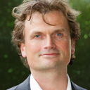
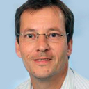
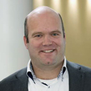

Plenair / STERRENHEMEL
-
12:00 | Ontvangst en Lunch
12:00 - 12:55
Voor een heerlijke lunch kunt u terecht in de Sirius Bar en de Rotonda. -
13:00 | Opening
13:00 - 13:10
Vivian Lataster
TV Host, presentatrice, actrice, programmamaker L1
-
13:10 | Keynote Marco Gianotten
13:10 - 13:50
 Marco Gianotten
Managing Director, Giarte
Xperience First, Process Second
De langste herinnering die blijft is hoe je mensen hebt laten voelen. Wat ontwikkel en beheer je nog als IT wanneer straks zo'n beetje alles uit de cloud komt en apps prefab van de band rollen? In essentie is je onderscheidend vermogen in de digitale wereld: experience. Dat is even wennen voor ons vak waar processen op de eerste plaats stonden. Het waarom en hoe is de crashcursus die Marco geeft. Beeldend en concreet weet u straks hoe cool uw eigen baan kan worden. -
13:55 | Breakout sessies
13:55 - 14:25
Breakout sessies
Zie track 1 t/m 4 voor de verschillende breakout sessies. -
14:25 | PAUZE
14:25-14:45
Pauze
Incl. hapjes, cocktails en muziek! -
14:50 | Keynote Peter van Schelven
14:50 - 15:30
Peter van Schelven
BIJ PETER | Wet & Recht te Oudewater
Uw gegevens op straat: wet melding datalekken
Sinds begin van dit jaar bestaat er voor elke organisatie die persoonsgegevens verwerkt of door een IT-provider laat verwerken een nieuwe wettelijke verplichting om ernstige datalekken en beveiligingsincidenten te melden. Bij een datalek kunt u denken aan verlies van een USB-stick met persoonsgegevens, een hacker die inbreekt in uw systeem of aan het geval dat als gevolg van een menselijke fout uw bestanden voor onbevoegden binnen of buiten uw organisatie toegankelijk worden. De verplichting om dergelijke incidenten te melden heeft impact op vrijwel iedere bedrijfsvoering. Het onderwerp raakt vragen op het gebied van security, juridische posities, contracten, verzekeringen, communicatie en HRM. In de presentatie van Peter van Schelven komen al deze onderwerpen aan bod. -
15:35 | Breakout sessies
15:35 -16:05
Breakout sessies
Zie track 1 t/m 4 voor de verschillende breakout sessies. -
16:05 | PAUZE
16:05 - 16:25
Pauze
Incl. hapjes, cocktails en muziek! -
16:30 | Breakout sessies
16:30 - 17:00
Breakout sessies
Zie track 1 t/m 4 voor de verschillende breakout sessies. -
17:10 | Keynote Ron Augustus
17:10 - 17:50
Ron Augustus
Microsoft Director Small and Midmarket Solutions & Partners
Veranderingen in de markt en de manier waarop Microsoft hierop ingaat
-
17:50 | Sluiting
17:50 - 18:00
Vivian Lataster (dagvoorzitter)
Afsluiting zesde editie van Hét Limburgs ICT-event door onze dagvoorzitter Vivian Lataster. -
18:00 | Cocktails, Bites and Music
18:00 - 20:00
Cocktails, Bites and Music!
Do we need to say more?
Track 1 / STERRENZAAL
-
13:55 | Sessie Salves
13:55 - 14:25
Roland Kieboom
Mobile First, Cloud First? User First!
Met elkaar zitten we midden in de digitale revolutie waarin het thema van vandaag 'Mobile First, Cloud First' een prominente rol vervuld. Deze revolutie zal in toenemende mate ook het gedrag van mensen en het functioneren van organisaties beïnvloeden. De compatibiliteit van het samenspel tussen mens, technologie en organisatie is binnen dit krachtenspel vaak een (groot) issue. De technologie (IT) wordt steeds meer integraal onderdeel van organisatieontwikkeling. Vaste kaders en structuren qua grens tussen werk en privé vervagen. En hier zie ik de worsteling ontstaan. Hoe kan IT haar technologie gedreven imago omzetten in een imago passend bij de hedendaagse behoefte?
Wat tovert die glimlach op de gezichten van de eindgebruikers? Wat is van toepassing en waarom is dat van toepassing? Hoe behalen we de gestelde doelen? Simpele vragen en al even simpele antwoorden, maar ik daag u uit! Vragen en inzichten hierop die de smaakvolle ingrediënten zijn van een bevlogen verhaal over gebruikersadoptie vanuit het perspectief 'User First'. -
14:25 | PAUZE
14:25-14:45
Pauze
Incl. hapjes, cocktails en muziek! -
15:35 | Sessie Open Line
15:35 - 16:05
Michel Stevelmans
Smart Cloud Desktop 2.0: de veilige, snelle en innovatieve desktop van de toekomst
Al sinds 2008 biedt Open Line de Smart Cloud Desktop aan vanuit haar datacenters. De Smart Cloud Desktop is een flexibele gelaagde en goede beheerbare, virtuele desktop die is opgebouwd uit de producten van Citrix, Microsoft en AppSense. Deze slimme virtuele desktop biedt eindgebruikers een betrouwbare werkplek die op ieder moment en op alle devices is te gebruiken. Eindgebruikers verlangen echter steeds meer flexibiliteit, snelheid en de vrijheid die ervaren wordt op eigen privé devices. Open Line werkt daarom hard aan de Smart Cloud Desktop 2.0, de opvolger van de Smart Cloud Desktop. Tijdens deze presentatie geeft Open Line inzicht in de opbouw van deze razendsnelle, veilige en innovatieve virtuele desktop die is samengesteld uit de laatste technieken zoals GPU virtualisatie, Application Layering, Secure File Sharing, Browser App Service, IOPS in memory en All Flash Arrays. -
16:05 | PAUZE
16:05 - 16:25
Pauze
Incl. hapjes, cocktails en muziek! -
16:30 | Sessie Advantive
16:30 - 17:00
 Paul Leemans
Collaboration at ASML: the road to Office365
Overview of the collaboration landscape at ASML and the roadmap towards Office365
Track 2 / GRANDE SUISSE
-
13:55 | Sessie Citrix
13:55 - 14:25
Ger wischmann & Laurens Faessen
Gemeente Simpelveld: van (data)mobiliteit vraagstuk naar oplossing
In deze presentatie nemen Ger Wischmann (Beleidsadviseur Bedrijfsvoering, gemeente Simpelveld) en Laurens Faessen (Open Line) u mee op de reis om van een functioneel vraagstuk naar een concrete oplossing middels Cirtrix Xenmobile te komen. Een gezamenlijke reis van Gemeente Simpelveld en Open Line, met mooie vergezichten, gebaseerd op vertrouwen. -
14:25 | PAUZE
14:25-14:45
Pauze
Incl. hapjes, cocktails en muziek! -
15:35 | Sessie Conclusion
15:35 - 16:05
Jeroen de Jonge
Cloud Ecosysteem: snel en wendbaar
Een beetje bedrijf is van IT aan elkaar 'geplakt'; zowat alle bedrijfsprocessen en data zijn verankerd in een woud van systemen en 'eeuwenoude' procedures. Na decennia accumulatie is het geheel samen te vatten in twee woorden: complex en log. Alles is in beton gegoten, maar het werkt wel. Echter, het slechts in de lucht houden van het bestaande landschap is niet meer voldoende wanneer nieuwe technologie de brandstof wordt voor veranderende verdien- en productiemodellen. Dan wordt wendbaarheid een vereiste. Maar hoe is dat te combineren: snel, wendbaar, flexibel, veilig en toch stabiel? -
16:05 | PAUZE
16:05 - 16:25
Pauze
Incl. hapjes, cocktails en muziek! -
16:30 | Sessie Red Hat
16:30 - 17:00
Roel Hodzelmans
Hoe DevOps, Microservices, (Docker) Containers en Cloud de toekomst vormen
Zoals Gartner al aangeeft in hun BiModal IT visie (zie http://www.gartner.com/it-glossary/bimodal) is de wereld van ICT snel aan het veranderen. De traditionele wereld die zocht naar stabiliteit en zekerheid wordt meer en meer ingehaald door verstorende krachten die gebruik maken van de ICT & Cloud om volledig de markt op de kop te zetten. Denk hierbij aan Amazon in de retailsector, Netflix en Spotify in de mediasector, Uber voor de personentransportsector etc. Roel zal in zijn sessie de Red Hat visie geven op deze verandering.
Track 3 / PEGASUS
-
13:55 | Sessie Kreuze
13:55 - 14:25
 Ivo Goergen
Ivo Goergen
Haal het maximale uit Skype for Business, maak de klant onderdeel van je bedrijfscommunicatie proces met SfB en Anywhere 365!
Wat als de techniek nu niet echt meer de belemmering is en het erop aan komt dat je het juiste idee hebt om met klanten om te gaan, partners te betrekken en daar vervolgens direct mee aan de slag te gaan om deze gewoon te realiseren. Wat als communicatie je bedrijfsproces kan optimaliseren wanneer je de klant opneemt in je bedrijfsprocessen. Even anders denken? In deze sessie vertelt Workstream People u over klanten en scenario’s die Anywhere365 met Skype for Business al gebruiken en zo overbodige dialogen uitbant en de communicatie tussen mensen verrijkt. -
14:25 | PAUZE
14:25-14:45
Pauze
Incl. hapjes, cocktails en muziek! -
15:35 | Sessie QNH
15:35 - 16:05
Jeroen Speetjens
Windows 10 cloud ready en secure implementeren!
Met de komst van Windows 10 staan veel bedrijven voor een nieuwe upgrade. Microsoft biedt met deze nieuwe release nog meer mogelijkheden om gebruik te maken van cloud diensten. Hoe kan je hier, op een veilige manier, maximaal gebruik van maken? -
16:05 | PAUZE
16:05 - 16:25
Pauze
Incl. hapjes, cocktails en muziek! -
16:30 | Sessie Cisco
16:30 - 17:00
 Peter Dijkstra
Disrupt or be disrupted! De toekomst start vandaag
Peter zal tijdens zijn sessie ingaan op de challenges welke digitalisering met zich meebrengt, maar wellicht belangrijker de disruptie van bedrijven welke IT zien als enabler van nieuwe businessmodellen. Wat betekent cloud en mobile binnen dit domein en wat is de visie van Cisco rondom deze thema’s. Disruptie ligt op de loer...
Track 4 / POMPHUISJE
-
13:55 | Sessie EMC
13:55 - 14:25
Ton Bogerd
Op weg naar een toekomst - vaste infrastructuur, de uitdagingen
Ton Bogerd presenteert in deze klantcase de toekomst vaste infrastructuur van VECOZO die 24X7 beschikbaar moet zijn. Veiligheid en compliancy wordt geboden door procesmanagement, monitoringsystemen, security-oplossingen en verantwoordelijke medewerkers. Vecozo’s technologiekeuze is gebaseerd op EMC, Cisco en Microsoft, daarmee wordt de volledige infrastructuur op eenduidige en eenvoudige wijze geëxploiteerd ten behoeve van Vecozo’s hoogwaardige dienstverlening. -
14:25 | PAUZE
14:25-14:45
Pauze
Incl. hapjes, cocktails en muziek! -
15:35 | Sessie Veeam
15:35 - 16:05
Jan van Leuken
Veeam: van ‘niche-speler’ naar marktleider in databeschikbaarheid
Beschikbaarheid van applicaties en data wordt door gebruikers gezien als vanzelfsprekend. Voor ondernemingen betekent dit echter dat zij hun ICT infrastructuur daarop moeten aanpassen om te kunnen voldoen aan deze vraag.
Veeam is marktleider op het gebied van backup & uitwijkoplossingen voor virtuele omgevingen. Tijdens deze presentatie leggen wij u uit hoe u uw on-premise infrastructuur kunt optimaliseren met de Veeam Availability suite gecombineerd met het gebruik van cloud oplossingen. -
16:05 | PAUZE
16:05 - 16:25
Pauze
Incl. hapjes, cocktails en muziek! -
16:30 | Sessie Accenture
16:30 - 17:00
Pieter Paul van Oerle
Big Bang Disruption - the era of the Customer has finally come